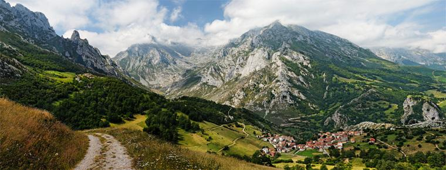

|
Introducere Repere geografice Clima Geografia politică Vegetația Fauna Relieful Rețeaua hidrografică |
Repere geograficeSuprafața sa totală este de 504.782 km², din care 499.542 km² reprezintă uscat și 5.240 km² apă. Din granița sa totală de 6.882 km, 4.964 km (88%) reprezintă apă și restul de 1.918 km este uscat (12%). Golful Biscaya (numit și „Marea Cantabriană”) se găsește la nord, mările Mediterană și Balearică la est-sud-est, sud-est și sud, Portugalia și Oceanul Atlantic la vest, iar Franța și Andorra la nord-est, de-a lungul lanțului Munților Pirinei. Coasta Mării Mediterane este lungă de 1.660 km, în timp ce coasta Atlanticului este lungă de 710 km. Lanțul Pirineilor se extinde pe întreaga distanță de 435 km dintre Mediterana și Golful Biscaya. În extremitatea sudică a Spaniei se găsește Strâmtoarea Gibraltar, care separă Spania și restul Europei de Maroc, care se găsește în extremitatea nord-vestică a Africii. Cea mai scurtă distanță dintre Spania și Maroc este de doar 13 km. 
În afara Peninsulei Iberice există câteva alte zone unde se exercită suveranitatea Spaniei, Insulele Baleare în Marea Mediterană, Insulele Canare în Oceanul Atlantic, situate la sud-vest de Spania continentală, 108 km din partea de nord a Africii și cinci zone de suveranitate (plazas de soberanía, în original, în spaniolă), situate pe coasta sau în afara coastei Marocului: Ceuta, Melilla, Islas Chafarinas, Peñón de Alhucemas și Peñón de Vélez de la Gomera.
|